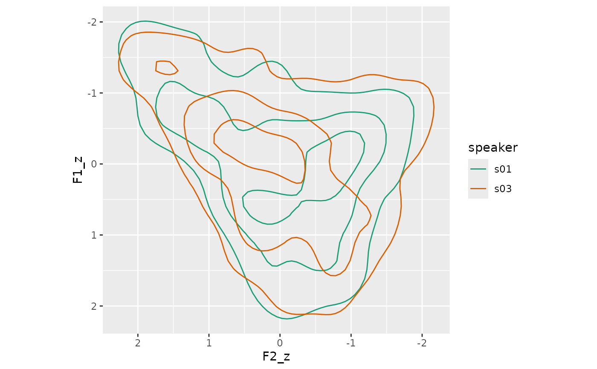
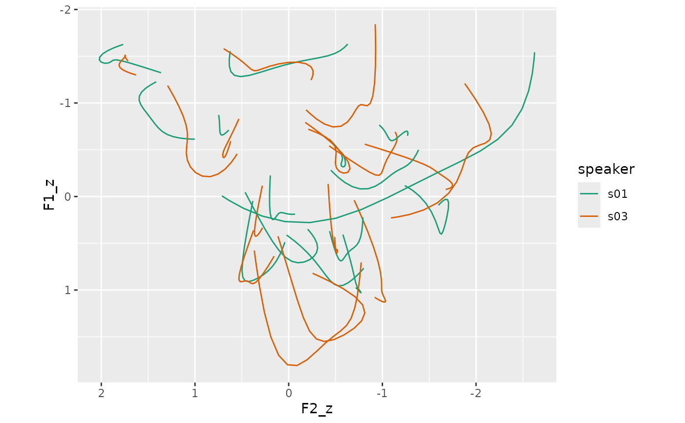

Lobanov Track Normalization
Usage
norm_track_lobanov(
.data,
...,
.token_id_col,
.by = NULL,
.time_col = NULL,
.order = 5,
.return_dct = FALSE,
.drop_orig = FALSE,
.names = "{.formant}_z",
.silent = FALSE
)Arguments
- .data
A data frame containing vowel formant data
- ...
<tidy-select>One or more unquoted expressions separated by commas. These should target the vowel formant data columns.- .token_id_col
<data-masking>A column that identifies token ids.- .by
<tidy-select>A selection of columns to group by. Typically a column of speaker IDs.- .time_col
<data-masking>A time column. (optional)- .return_dct
Whether or not the normalized DCT coefficients themselves should be returned.
- .drop_orig
Should the originally targeted columns be dropped.
- .names
A
glue::glue()expression for naming the normalized data columns. The"{.formant}"portion corresponds to the name of the original formant columns.- .silent
Whether or not the informational message should be printed.
Details
$$ \hat{F}_{ij} = \frac{F_{ij} - L_i}{S_i} $$
$$ L_i = \frac{1}{N}\sum_{j=1}^{N}F_{ij} $$
$$ S_i = \sqrt{\frac{\sum(F_{ij}-L_i)^2}{N-1}} $$
Where
\(\hat{F}\) is the normalized formant
\(i\) is the formant number
\(j\) is the token number
References
Lobanov, B. (1971). Classification of Russian vowels spoken by different listeners. Journal of the Acoustical Society of America, 49, 606–608.
Examples
library(tidynorm)
library(dplyr)
ggplot2_inst <- require(ggplot2)
track_subset <- speaker_tracks |>
filter(
.by = c(speaker, id),
if_all(
F1:F3,
.fns =\(x) mean(is.finite(x)) > 0.9
),
row_number() %% 2 == 1
)
track_norm <- track_subset |>
norm_track_lobanov(
F1:F3,
.by = speaker,
.token_id_col = id,
.time_col = t,
.drop_orig = TRUE
)
if(ggplot2_inst){
track_norm |>
ggplot(
aes(F2_z, F1_z, color = speaker)
)+
stat_density_2d(bins = 4)+
scale_x_reverse()+
scale_y_reverse()+
scale_color_brewer(palette = "Dark2")+
coord_fixed()
}

# returning the DCT coefficients
track_norm_dct <- track_subset |>
norm_track_lobanov(
F1:F3,
.by = speaker,
.token_id_col = id,
.time_col = t,
.return_dct = TRUE,
.drop_orig = TRUE,
.names = "{.formant}_z"
)
track_norm_means <- track_norm_dct |>
summarise(
.by = c(speaker, vowel, .param),
across(
ends_with("_z"),
mean
)
) |>
reframe_with_idct(
ends_with("_z"),
.by = speaker,
.token_id_col = vowel,
.param_col = .param
)
if(ggplot2_inst){
track_norm_means|>
ggplot(
aes(F2_z, F1_z, color = speaker)
)+
geom_path(
aes(
group = interaction(speaker, vowel)
)
)+
scale_x_reverse()+
scale_y_reverse()+
scale_color_brewer(palette = "Dark2")+
coord_fixed()
}
